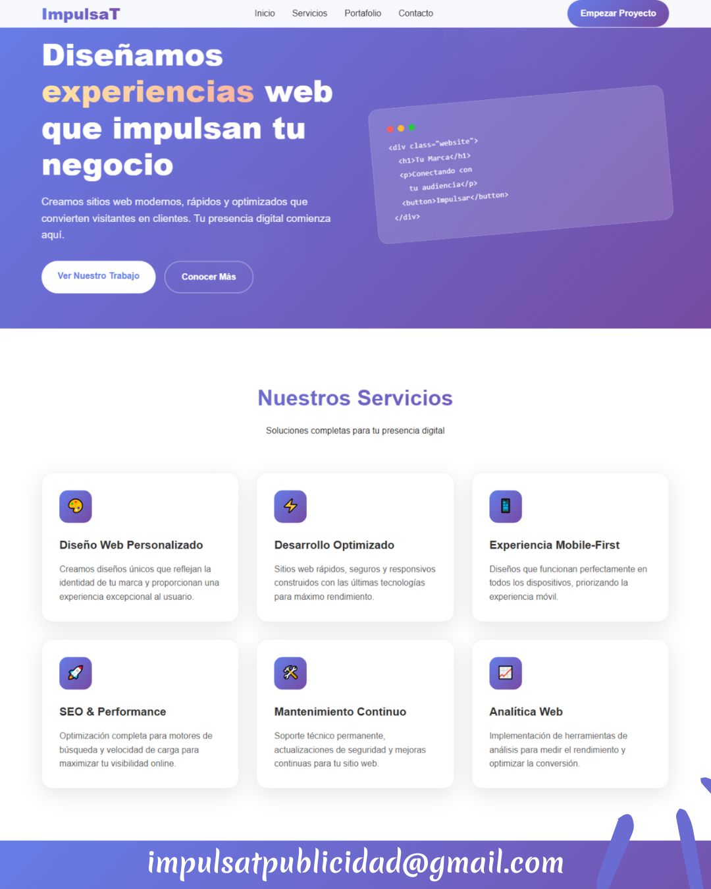
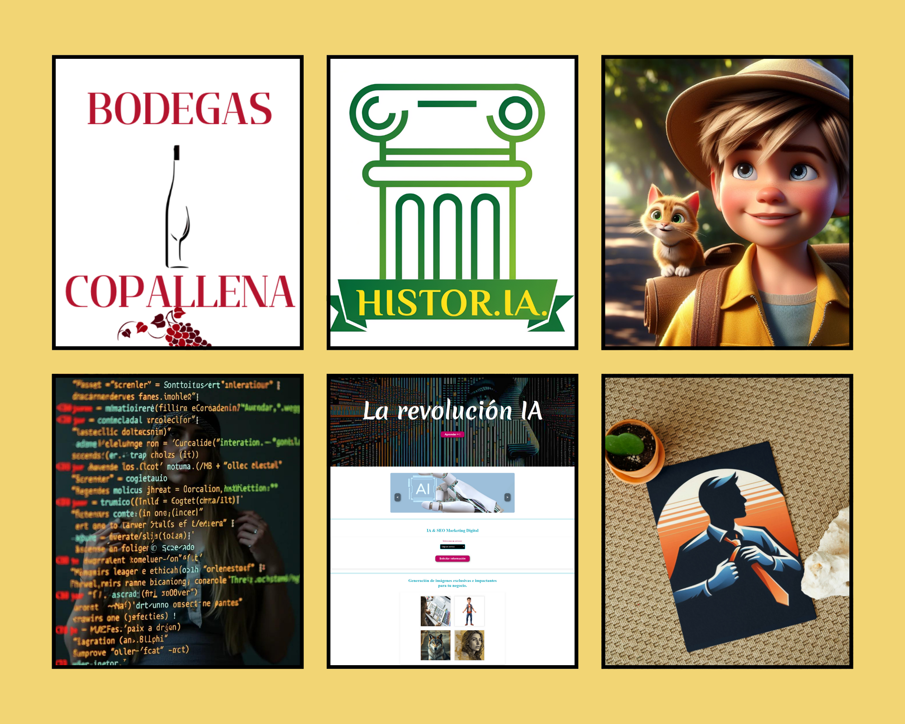

Web · SEO · Contenido · Conversión
200k+
Audiencia gestionada en canales digitales.
95+
Puntuaciones de rendimiento en optimización web.
WordPress + Código
Diseño visual con base técnica real en frontend.
Diseño webs que se ven bien y también convierten.
Soy Elena Perandrés Molino, diseñadora web y especialista en marketing digital. Trabajo con WordPress, Elementor, SEO, community management y frontend para crear proyectos claros, rápidos y pensados para captar clientes.
Servicios
Esta estructura deja claro qué haces, para quién y cómo puedes ayudar, que era una de las mejoras clave para que el portfolio convierta mejor.
Diseño web
Creación de webs corporativas, portfolios, páginas de servicios y landings con estructura clara, diseño responsive y enfoque comercial.
SEO y optimización
Mejora de velocidad, estructura on-page, indexación, contenidos y rendimiento técnico para aumentar visibilidad y calidad de la experiencia.
Marketing y comunidad
Gestión de redes, estrategia de contenidos, branding digital y crecimiento de comunidad con análisis de métricas y enfoque multiplataforma.
Portfolio seleccionado
Ahora esta parte se comporta como una galería editorial más limpia, con más aire entre proyectos y una lectura visual mucho más clara.

Tarax Digital
Portfolio y centro de recursos pensado para reforzar marca personal, utilidad y captación de interés.
Ver proyecto
ImpulsaT Publicidad
Web enfocada a servicios digitales y emprendimiento con propuesta de valor clara y estructura comercial.
Ver proyecto
Web para negocio local
Proyecto orientado a confianza, presentación de servicios y contacto directo con diseño limpio y profesional.

Diseño para cafetería
Propuesta visual con enfoque de marca, presencia online y estética cuidada para negocios con identidad propia.

Creatividad visual con IA
Exploración de recursos gráficos, prompts visuales y piezas creativas orientadas a branding y contenido digital.

Selección creativa
Piezas digitales y propuestas visuales que muestran versatilidad en diseño, comunicación y narrativa gráfica.
Experiencia
También he simplificado el bloque profesional para que tu valor se entienda rápido y no compitan demasiados perfiles a la vez.
Diseñadora web y desarrolladora frontend
Desarrollo de sitios web y recursos digitales con foco en responsive design, WordPress, rendimiento, SEO técnico y estructura orientada a conversión.
Community manager y estratega de contenidos
Gestión de canales sociales y contenido audiovisual con crecimiento de audiencias, análisis de métricas y mejora de engagement en varias plataformas.
Creadora de contenido educativo
Producción de materiales didácticos, vídeos y recursos formativos para YouTube y cursos online, con experiencia en comunidad y comunicación digital.
WordPress, Elementor, SEO y código
Trabajo con HTML, CSS, JavaScript, Netlify, Canva, DaVinci Resolve, analítica digital, branding y automatización creativa con IA.
Sobre mí
El texto biográfico ahora tiene más foco comercial: primero explicas qué haces y luego añades credenciales y contexto personal.
Soy una profesional digital con perfil híbrido entre diseño web, marketing digital y creación de contenido. Mi fortaleza está en unir una parte visual cuidada con una base técnica real, para construir proyectos más claros, útiles y preparados para crecer online.
Trabajo especialmente bien con WordPress y Elementor, pero también puedo maquetar y personalizar con HTML, CSS y JavaScript. Además, aplico SEO, estructura de contenidos y optimización de rendimiento para que una web no solo sea bonita, sino efectiva.
Mi experiencia en YouTube, redes sociales y formación online me aporta una visión más completa de marca, audiencia, narrativa y captación de atención.
Granada, España
Disponible para remoto
Freelance y colaboración
Contacto
He dejado una llamada a la acción más clara y directa, porque para un portfolio profesional es mejor facilitar el contacto que usar un formulario largo sin backend real.
¿Tienes un proyecto web o necesitas mejorar tu presencia digital?
Puedo ayudarte con diseño web, WordPress con Elementor, optimización SEO, estrategia de contenido y comunicación digital.
- Email: helenaperand@gmail.com
- Teléfono: +34 680 613 291
- Ubicación: Granada, España.